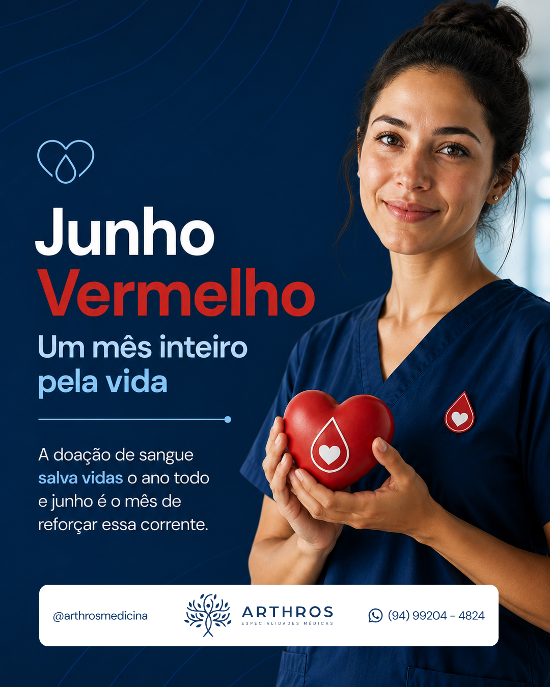

Sugestão de Arte
Junho Vermelho: um mês inteiro pela vida.
A doação de sangue salva vidas o ano todo — e junho é o mês de reforçar essa corrente

Legenda
Junho Vermelho: um mês inteiro pela vida. 🟥
Você sabia que os estoques dos bancos de sangue costumam cair justamente nos meses mais frios e nos períodos de festas e férias? É por isso que existe o Junho Vermelho — um movimento nacional para conscientizar e incentivar a doação de sangue.
Doar é um gesto simples que tem um impacto enorme:
🩸 Uma única doação pode salvar até 4 vidas
🏥 Cirurgias, partos, acidentes e tratamentos dependem de sangue disponível
🔁 Os estoques precisam ser repostos o ano inteiro, não só em emergências
❤️ Doadores regulares são o que mantém a corrente do bem funcionando
Quem pode doar? Em geral, pessoas entre 16 e 69 anos, com mais de 50 kg, bem alimentadas e descansadas. Leve um documento com foto e verifique o hemocentro mais próximo.
Neste Junho Vermelho, a Arthros se une à causa: cuidar da saúde também é cuidar de quem está ao nosso redor.
❤️ Faça parte dessa corrente. E para manter sua saúde sempre em dia, conte com a Arthros — agende pelo WhatsApp, link na bio.
Arthros Especialidades Médicas — Parauapebas.
#ArthrosMedicina #JunhoVermelho #DoaçãoDeSangue #DoarSangueSalvaVidas #CorrenteDoBem #Parauapebas #SaúdeQueCuida